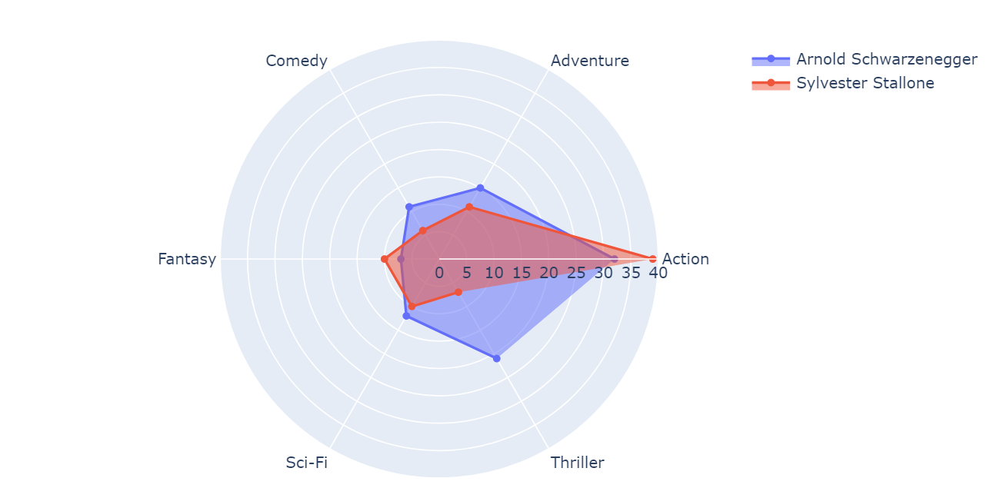
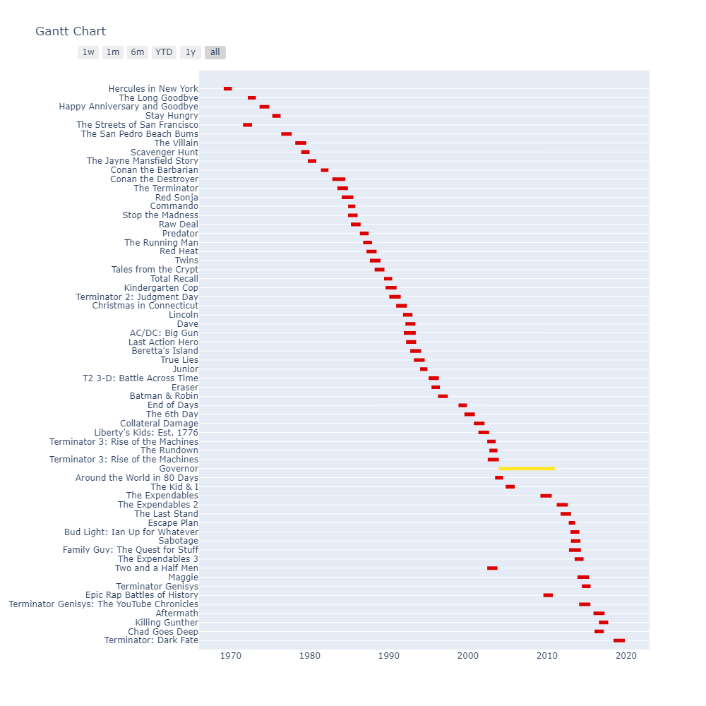
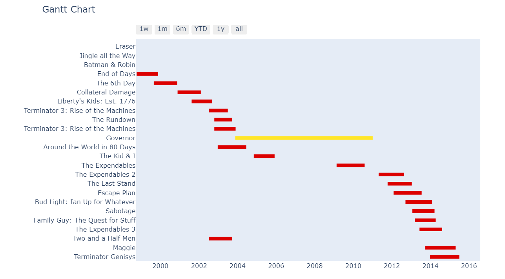

These following visualizations are from each actor's respective IMDb pages where their credits were cleaned so that we only had movies in which the actor has acted in. For example, IMDb lists in its acting credits if an actor was a voice in a video game, YouTube video, television shows, etc.
This word chart's word are based on the genre of Arnold's movies. However, an issue with this representation is that certain movies are just considered as a single genre and others have many. This skews the data where certain movies have a larger overall weight in comparison to others. For example, a movie can just be counted in 'Western' but another movie can be 'Action', 'Adventure', 'Comedy', etc.
In the radar chart, I wanted to compare two movie stars that continuously battled each other in both private and public lives. Arnold would purposely show intent towards bad movies to trick Stallone into signing on as an actor and having to deal with its script. They also would release movies very similar to each other at similar times as a battle of wills to see who reigns supreme. This made me want to compare this rivarly through the genres they both acted in and seeing if their copycat antics were in genre types and amounts as well.
Movie production before release is typically broken up into 3 sections and a section afterwards. Before release, a movie undergoes preproduction, shooting, and postproduction and then after release, there is the promotion phase. I wanted to see how Arnold's commitments were like over his large movie career especially his film career while he served as Governor of California (denoted in yellow). Movies can greatly vary in time for each of these and they do not report them either making the best way through using ranges and using an average was misleading as then every movie would look the same. Using this article as a guideline, I found the typical ranges for each of those sections and randomly chose values for each that would make the most sense for each movie's genre.
This specifically focuses on the movies he made while Governor which was surprising as we would think that the job's time commitments would not allow him to be a part of the movie schedules. This combined with a possible conflict of interest with a public official promoting a private product.
